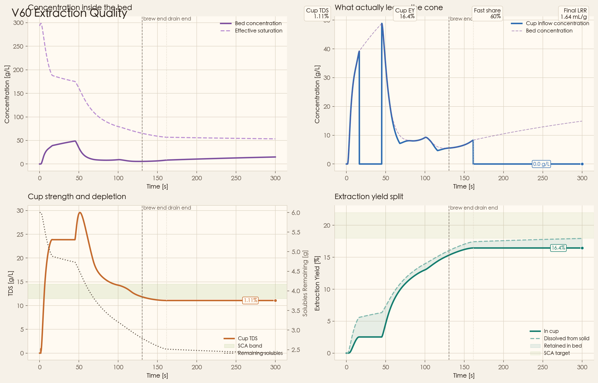
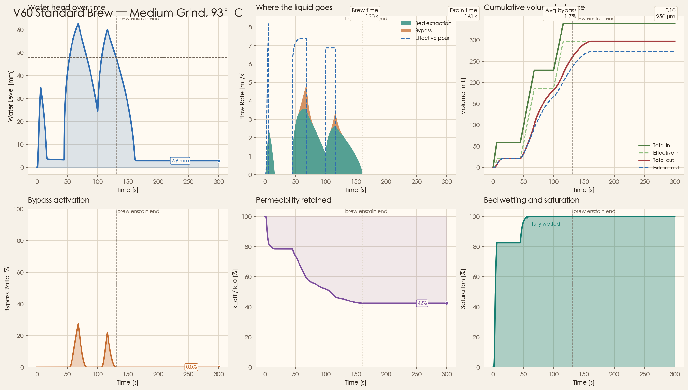

Technical Reference · Physics Simulation
V60 Pour-Over
Physics Engine
A landing page for the current simulator: pressure-driven flow, extraction chemistry, bypass, and thermal coupling rendered as generated figures instead of hand-drawn placeholders.
01
See The Brew
Start with the generated figures. They now come from the simulator output, so the page is showing the actual model state instead of decorative diagrams.
02
Read The Tradeoffs
Each section pairs one visual story with just enough equations to explain what pushes the curves where they go.
03
Compare Regimes
The page is optimized to compare grind, thermal regime, and permeability loss without needing to cross-reference multiple tabs.
Current Baseline
Medium grind, 93°C, generated outputs wired straight into the page.
This reference currently behaves like a slightly under-extracted everyday brew: realistic flow diagnostics, realistic bypass, but a conservative cup-side EY.
Cup TDS
1.11%
Cup EY
16.4%
Avg bypass
1.7%
LRR
2.23
Project Showcase
Why This Repo Exists
A pour-over simulator that treats flow, temperature, and extraction as one coupled physical system.
Most coffee tools stop at recipe calculators or static brew ratios. This project instead tracks the bed as a changing porous medium: water head builds and collapses, permeability decays, bypass opens late, temperature shifts both viscosity and extraction, and the final cup is read from generated outputs.
Flow First
Water level, bypass, permeability loss, and saturation are treated as first-class outputs, not hidden assumptions.
Extraction Split
The cup-side result is decomposed into fast and slow soluble pools instead of one opaque concentration curve.
Comparable Regimes
Grind and temperature comparisons are generated from the same model, so the figures can be read as a coherent family.
uv run python -m pour_over
The lead figure is the grind outcome map: dynamic head, outflow, cup TDS trajectory, and the final cup position against the target window.
01 Flow Story
Hydraulic Mechanism
The brew is controlled by pressure head, bed resistance, and late-opening bypass.
This section is the hydraulic backbone of the model. The state does not assume one fixed flow path: water can go through the bed, be blocked by capillary and gas thresholds, or divert into wall-channel bypass once free-water head becomes large enough.
Drive
`h(t)` and `Q_in` raise the pressure head. This is the immediate term that pushes water through the porous bed.
Resistance
`k_eff` decays with fines migration, swelling, and compression, so the same recipe can move into a slower hydraulic regime.
Threshold
`h_cap` and `h_gas(t)` subtract from usable head, which is why early brew flow can stay suppressed even with visible water above the bed.
Leakage Path
`Q_bp` stays small at low head and opens later, so bypass is modeled as a head-activated parallel pathway rather than a constant loss.
Darcy extraction flow
Q_ext ∝ k_eff · h_eff / μ(T)
h_eff = h − h_cap − h_gas(t) + h_cap,wet
h_eff = h − h_cap − h_gas(t) + h_cap,wet
Fine migration clogging
k_eff(V_out) = k₀ / (1 + β · V_out)
CO₂ back-pressure decay
h_gas(t) = h_gas₀ · exp(−t / τCO₂)
τ_CO₂ ≈ 35 s （Cameron et al. 2020）
τ_CO₂ ≈ 35 s （Cameron et al. 2020）
Bypass flow (rib channels)
Q_bp = ψ · h_free · shape(h_free) · activation(h_free)
low water head ≈ no bypass; higher free-water head opens rib-channel flow
low water head ≈ no bypass; higher free-water head opens rib-channel flow
Particle swelling — Kozeny-Carman
φ(sat) = φ₀ − Δφ · sat
k ∝ φ³ / (1−φ)² pore connectivity
k ∝ φ³ / (1−φ)² pore connectivity
In the generated diagnostics, this logic resolves into measurable outputs: water-head collapse, bypass spikes, permeability retention, and the point where the bed becomes fully wetted.
02 Extraction Story
Shrinking-core accessibility (bed pore)
C_eff = C_sat(T) · (M / M₀)β, β = 1.5
Noyes-Whitney transport rate
k_ext(T) = η · A_eff · D(T) / L_eff · exp(−Eₐ / RT)
Bed concentration ODE — CSTR model
dC/dt = k_ext · (C_eff − C) · Q_ext / V_liq
− C · Q_ext / V_liq
− C · Q_ext / V_liq
Solid-phase depletion
dM/dt = −k_ext · (C_eff − C) · V_liq · f(C)
Activation Energy — Roast × Component
Fast (Acids / Sweetness)
Eₐ = 15 kJ/mol
Slow — Light roast (Eₐ_slow)
Eₐ = 50 kJ/mol
Slow — Medium roast
Eₐ = 45 kJ/mol
Slow — Dark roast
Eₐ = 38 kJ/mol
Eₐ_slow ≫ Eₐ_fast → higher T amplifies bitter extraction disproportionately
Generated Output — Extraction Quality
This figure now comes directly from the simulation output. It shows bed concentration, outflow concentration, cup TDS, and the split between dissolved EY and in-cup EY in one place.

Current medium baseline in the generated figure: cup TDS about 1.11%, in-cup EY about 16.4%, and fast compounds contribute roughly 60% of the cup-side extraction.
Physically, this is the section where internal availability, transport path length, and cup-side dilution stop being abstract symbols and become a cup-strength trajectory.
03 System Map
Model Architecture
One state trajectory, multiple technical surfaces.
The simulator is built so that flow, thermal, and extraction outputs are all projections of the same coupled ODE state. This is why the figures on the page can be compared directly: they are not separate calculators stitched together after the fact.
State Layer
`h, V_out, V_poured, sat, C_fast, M_fast, C_slow, M_slow, T`
Closure Layer
Darcy flow, bypass activation, wet-bed capillary head, roast-dependent chemistry, and Newton cooling.
Output Layer
Brew time, drain time, TDS, in-cup EY, dissolved EY, D10 diagnostics, and fast/slow flavor balance.
The left-to-right map reads as protocol input → hydraulic state → thermal state → extraction state → cup outputs. That ordering is intentional: it keeps local reasoning possible while preserving the coupled physics.
04 Temperature Regime
Newton cooling ODE
dT/dt = −h_cool · A_top · (T − T_amb) / (ρCp · V_eff)
V_eff = V_liq + V_equiv_coffee
V_eff = V_liq + V_equiv_coffee
Dynamic viscosity (water)
μ(T) = μ_ref · μ_rel(T) / μ_rel(T_ref)
μ_rel(T): empirical fit to the user-provided viscosity curve
μ_rel(T): empirical fit to the user-provided viscosity curve
Effect on flow rate
Q ∝ k / μ(T)
Lower T → higher μ → slower Q → longer contact time
Lower T → higher μ → slower Q → longer contact time
Saturation concentration (Henry-type)
C_sat(T) = C_sat_ref · exp[α · (T − T_ref)]
Higher T → more soluble → faster EY build-up
Higher T → more soluble → faster EY build-up
The landing-page view here is not “temperature is good or bad”; it is that temperature changes both throughput and chemistry, and the slow bitter fraction reacts more strongly than the fast bright fraction.
Generated Output — Thermal Coupling
This figure is exported from the simulator and compares slurry temperature, outflow response, cup TDS, and cup EY under cool, baseline, and hot brewing temperatures.

The present baseline outputs are approximately 14.6% EY at 83°C, 16.4% at 93°C, and 17.7% at 99°C, with hotter water increasing slow-soluble extraction more strongly.
05 Hydraulic Regime
Generated Output — Flow Diagnostics
This simulator output collects water head, flow decomposition, cumulative volume balance, bypass activation, permeability retention, and bed saturation in one diagnostics panel.

In the current medium baseline, the bed retains roughly 42% of its initial permeability by the end of the brew, and the average bypass fraction is around 1.7%.
Capillary pressure cutoff
Q → Q · σ_cap(h)
σ_cap = sigmoid[(h − h_cap) / δ]
h_cap = 3 mm, δ = 0.5 mm
drip-filter transition: h < h_cap → Q → 0
σ_cap = sigmoid[(h − h_cap) / δ]
h_cap = 3 mm, δ = 0.5 mm
drip-filter transition: h < h_cap → Q → 0
Bloom saturation — cubic Hermite
sat = V_poured / V_absorb(dose)
smooth_step(sat, 0, 1) = 3s² − 2s³ [C¹]
V_absorb_dry = 0.5 mL/g (CO₂-corrected)
V_absorb_full = 1.64 mL/g (medium roast)
smooth_step(sat, 0, 1) = 3s² − 2s³ [C¹]
V_absorb_dry = 0.5 mL/g (CO₂-corrected)
V_absorb_full = 1.64 mL/g (medium roast)
Pressure-head closure
h_eff = raw_head · sigmoid(raw_head / ε)
smooth positive-part closure near the capillary / gas threshold
prevents numerical chatter at raw_head ≈ 0
smooth positive-part closure near the capillary / gas threshold
prevents numerical chatter at raw_head ≈ 0
ParameterDefault value
k₀6×10⁻¹¹ m²
β (fines)3000 m⁻³
h_cap3 mm
h_bed48 mm
h_gas₀ (medium)1 mm
This is the section that explains why fine grind does not just extract more. Once the bed compacts and permeability collapses, the whole brew migrates into a different hydraulic regime.
06 Roast Profiles
Generated Output — Grind Outcome Map
This figure compares coarse, medium, and fine grind directly in terms of water head, outflow, cup TDS trajectory, and final cup position against the target window.
LIGHT
max_EY22 %
Eₐ_slow50 kJ/mol
fast_fraction0.45
absorb_full1.2 mL/g
h_gas₀9 mm
Dense cell walls → high CO₂ retention → strong back-pressure, limited solute accessibility
MEDIUM
max_EY30 %
Eₐ_slow45 kJ/mol
fast_fraction0.35
absorb_full1.64 mL/g
h_gas₀1 mm
Engineering baseline for a slightly degassed everyday medium roast; not a universal fresh-bean reference.
DARK
max_EY30 %
Eₐ_slow38 kJ/mol
fast_fraction0.25
absorb_full1.7 mL/g
h_gas₀4 mm
Ruptured cell walls → low CO₂, porous matrix. Bitter compounds dominate with lower Eₐ.
Technical Highlights
Model Surface
The repo exposes a reduced-order but fully coupled brew model, not a static recipe calculator.
The technical point of this project is that the brew is treated as a stateful system. Hydraulic resistance, thermal loss, accessibility, and cup-side dilution all evolve together, and the generated figures are simply different slices through that same state trajectory.
State Vector
`h, V_out, V_poured, sat, C_fast, M_fast, C_slow, M_slow, T`
Primary Outputs
Brew time, drain time, bypass ratio, permeability retention, TDS, in-cup EY, dissolved EY, D10 diagnostics, and fast/slow flavor balance.
Physical Closures
Darcy flow, capillary cutoff, wet-bed capillary boost, fines clogging, Newton cooling, roast-dependent chemistry, and Noyes-Whitney-like transport.
Core State
state = [h, V_out, V_poured, sat, C_fast, M_fast, C_slow, M_slow, T]
Hydraulic Output Layer
Q_ext, Q_bp, k_eff, sat, h, brew_time, drain_time
Cup Output Layer
C_out, TDS, EY_cup, EY_dissolved, EY_fast, EY_slow
Project scope, installation, and reproducibility are intentionally kept in the README. This page is for surfacing the model and the figures it produces.